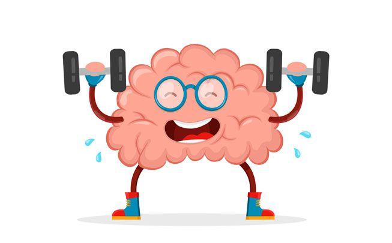

Добро пожаловать!
Управляйте своим вниманием — управляйте своей жизнью.
Начните тренировки, чтобы фокусироваться глубже, мыслить яснее и добиваться большего.

Управляйте своим вниманием — управляйте своей жизнью.
Начните тренировки, чтобы фокусироваться глубже, мыслить яснее и добиваться большего.
Добро пожаловать на наш сайт, посвященный развитию концентрации внимания и работе с СДВГ! Здесь мы верим, что внимание — это навык, который можно развивать, как и любой другой. Наша миссия — помочь вам или вашим близким найти баланс, обрести уверенность в своих силах и жить полной жизнью, несмотря на любые сложности.
Независимо от того, хотите ли вы улучшить свои когнитивные способности, научиться управлять эмоциями или просто лучше справляться с ежедневными задачами, вы находитесь в нужном месте. Мы здесь, чтобы поддержать вас на каждом шаге вашего пути.
СДВГ (синдром дефицита внимания и гиперактивности) — это не болезнь, а особенность мозга. Это состояние сопровождается трудностями с концентрацией, повышенной активностью и импульсивностью. Важно понимать, что СДВГ — это не приговор. Правильный подход к тренировке внимания, развитие осознанности и организация рутины могут значительно улучшить качество жизни.
Даже если у вас нет диагноза, но вы чувствуете, что теряете фокус или быстро отвлекаетесь, это место — для вас. Мы подготовили эффективные упражнения, техники и советы, которые подойдут как детям, так и взрослым.
1. Упражнения на осознанность (mindfulness)
Осознанность — это способность сосредоточиться на настоящем моменте. Вот несколько простых упражнений:
Движение помогает переработать избыточную энергию и сосредоточиться:
Люди с СДВГ часто сталкиваются с эмоциональными всплесками и стрессом. Управление этими состояниями важно для общего состояния.
Поддержка родителей и близких
Поддержка семьи и друзей играет ключевую роль. Несколько рекомендаций:
Собраны реальные истории людей, которые научились справляться с особенностями СДВГ и улучшили концентрацию. Эти примеры показывают, что даже самые сложные задачи решаемы при правильном подходе.
Независимо от того, хотите ли вы улучшить свои когнитивные способности, научиться управлять эмоциями или просто лучше справляться с ежедневными задачами, вы находитесь в нужном месте. Мы здесь, чтобы поддержать вас на каждом шаге вашего пути.
подробнееВажно сделать первый шаг. Каждый день, посвященный тренировке, приближает к большей осознанности, уверенности и контролю над своей жизнью.
Начать можно с простых упражнений, постепенного внедрения техник или консультации. Путь к улучшению начинается прямо сейчас.